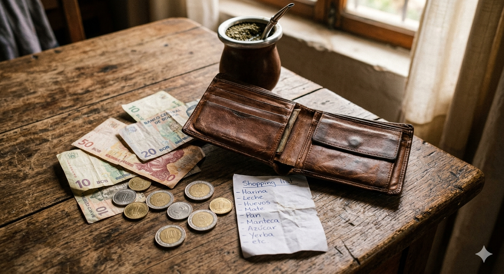
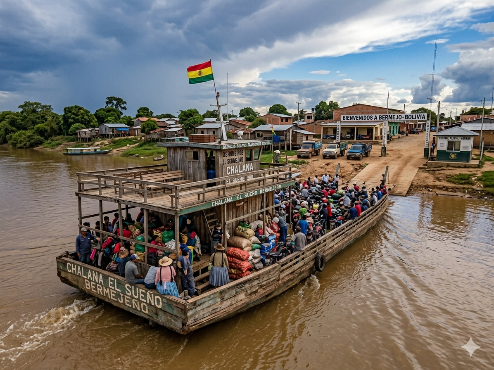
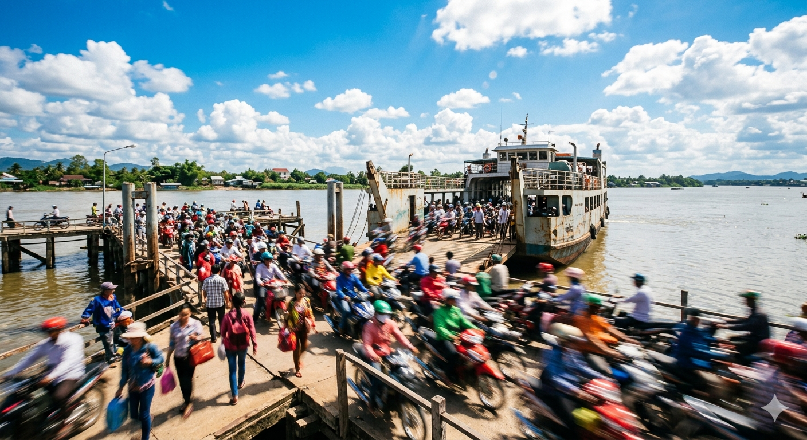
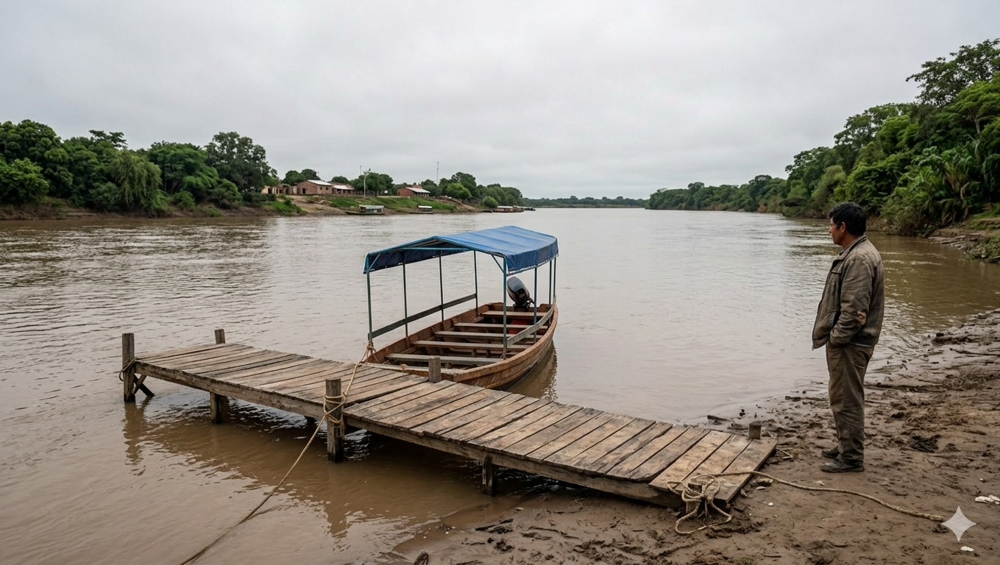
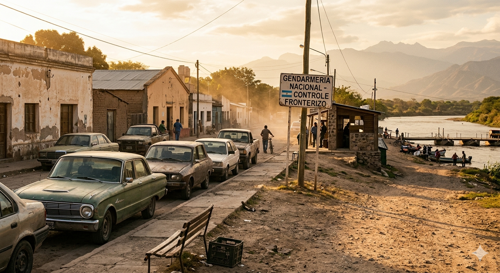
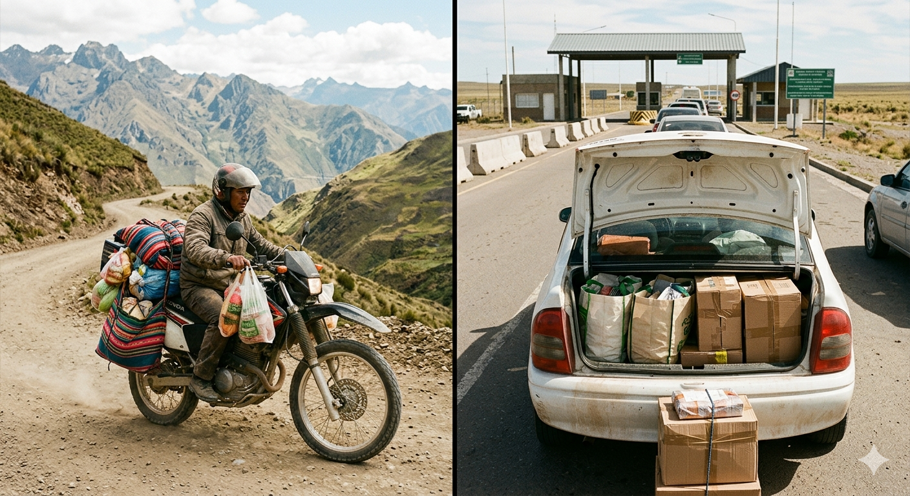
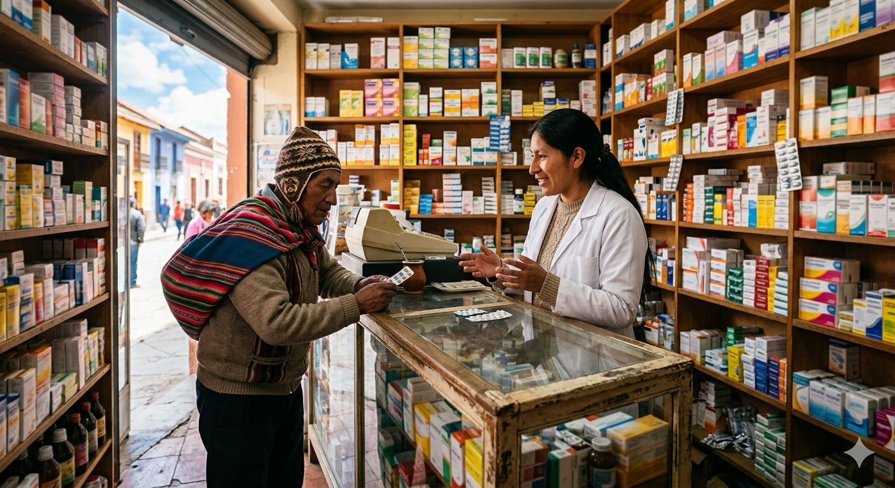
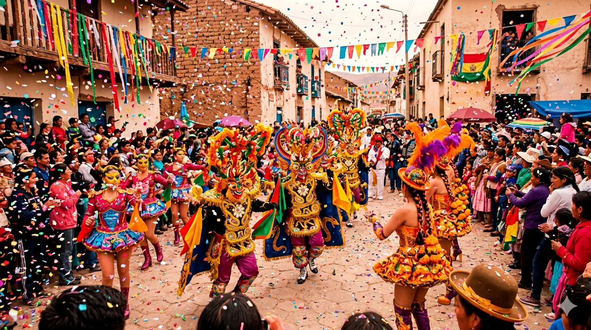

Guías de la frontera Orán–Bermejo
Artículos escritos desde Orán por gente que cruza la frontera. Documentación, dinero, aduana, qué comprar, cómo moverse, qué comer y cómo es la vida de un lado y del otro del río Bermejo.
Dinero & cotizaciones

Cómo cambiar bolivianos en Bermejo
Dónde y cómo cambiar dinero sin perder plata. Tres casas que conviene revisar antes de aceptar la primera tasa.
Leer guía →Dólar Blue en Orán: cómo afecta al viajero
Qué es el dólar blue, por qué importa cuando cruzás a Bermejo y cómo medir si vale la pena cambiar antes o después de pasar.
Leer guía →Boliviano a pesos: cómo calcular tu gasto
Una hoja de ruta para presupuestar el día sin sorpresas. Conversiones reales con precios de Bermejo en mano.
Leer guía →
Cuánto cuesta un día completo en Bermejo
Combustible, chalana, almuerzo, dos compras típicas y el regreso. Lo que realmente sale de la billetera.
Leer guía →Documentación & aduana

Documentación para cruzar a Bolivia
DNI, pasaporte, papeles del auto y la pregunta menos obvia: ¿qué pasa si llevás a un menor que no es hijo tuyo?
Leer guía →.png)
Aduana argentina: qué se permite traer
Franquicia de viajero, USD 300, electrónica nueva, comida. Lo que conviene declarar y lo que es mejor no llevar.
Leer guía →Viajar con niños a Bermejo
Autorización del otro progenitor, partida de nacimiento, qué pide migraciones cuando viaja solo uno de los padres.
Leer guía →Cómo cruzar: chalana, ruta y transporte

Cómo viajar de Orán a Bermejo
Ruta 50, Aguas Blancas, chalana y aduana boliviana. El paso a paso con tiempos reales para no perderse.
Leer guía →
La chalana de Aguas Blancas
Cómo funciona la balsa, qué se cobra, qué hacer si el río está crecido y cuáles son los horarios reales.
Leer guía →
Mejores días y horarios para cruzar
Lunes vs. viernes, mañana vs. tarde. Cuándo hay menos cola en aduana y cuándo es un calvario.
Leer guía →
Si la chalana está suspendida: plan B
Cuándo conviene esperar, cuándo desviarse por Salvador Mazza y cuánto se suma de viaje real.
Leer guía →
Dónde estacionar en Aguas Blancas
Si vas a cruzar a pie, qué playa de estacionamiento conviene, cuánto cobran y qué evitar dejar adentro del auto.
Leer guía →
Moto vs. auto para cruzar a Bermejo
Costos, tiempos y trámites de cada uno. Cuál conviene si vas a comprar liviano y cuál si vas a cargar.
Leer guía →Qué comprar (y qué no)

Qué conviene comprar en Bermejo hoy
Ropa, electrónica, cosméticos. Lo que vale la pena cargar y lo que no compensa el riesgo aduanero.
Leer guía →
Mercado Central de Bermejo
Qué encontrás en cada sector, cómo regatear sin pasarse y cuáles son las trampas turistas más comunes.
Leer guía →
Electrónica en Bermejo: garantía y riesgos
Cómo verificar que un celular es original, qué garantía real tenés y qué pasa al pasar por aduana argentina.
Leer guía →
Farmacias y medicamentos en Bermejo
Qué medicamentos rinden mucho más que en Argentina y cuáles directamente no se pueden traer.
Leer guía →Cultura y vida en la frontera

Gastronomía de Bermejo: qué probar
Api con buñuelo, salteñas, silpancho, sopa de maní. Dónde comerlos y por cuánto en pesos bolivianos.
Leer guía →
Historia de la frontera Orán–Bermejo
Cómo se formó la dinámica comercial que conocemos hoy, desde el zafrero a la cumbia villera del cruce nocturno.
Leer guía →
Festividades y ferias de Bermejo
Carnaval, aniversario, fiestas patronales y feria del 24 de septiembre. Calendario para no irse el día equivocado.
Leer guía →